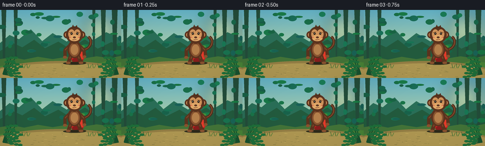
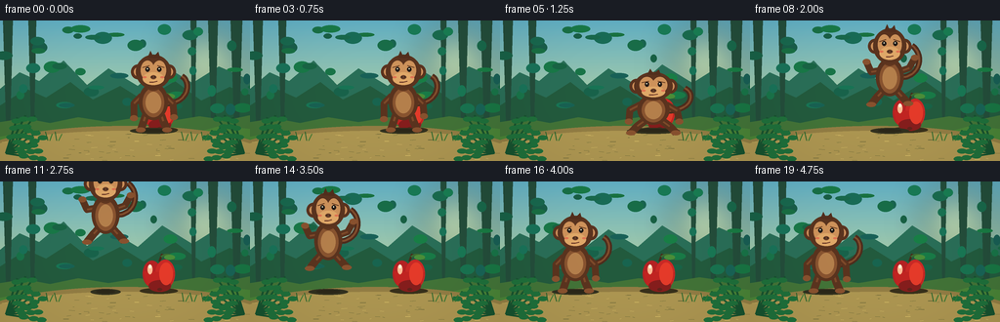
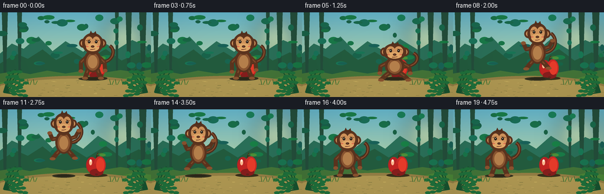

CODING AGENTS AS PIXEL WORLD MODELS
traex/GPT-5.6-Sol · dynamic_spatial_relationship_0061
点击播放 · 原生 RGB 像素
逐轮保存的候选
回放视频、检查图与代码变化。
每份候选均可单独播放。实际图片检查记录在下方工具轨迹中。
候选 01播放与检查图
点击播放 · 原生 RGB 像素


展开代码变化
--- 上一保存版本
+++ 本次保存版本
@@ -0,0 +1,220 @@
+from pathlib import Path
+import math
+import numpy as np
+from PIL import Image, ImageDraw, ImageFilter
+import artifact_io
+
+W, H, N = 256, 144, 20
+S = 4
+rng = np.random.default_rng(61)
+
+class Canvas:
+ def __init__(self, im):
+ self.im = im
+ self.d = ImageDraw.Draw(im, 'RGBA')
+ def box(self, b): return tuple(int(round(v*S)) for v in b)
+ def pts(self, p): return [(int(round(x*S)), int(round(y*S))) for x,y in p]
+ def ellipse(self, b, fill, outline=None, width=1):
+ self.d.ellipse(self.box(b), fill=fill, outline=outline, width=max(1,int(width*S)))
+ def polygon(self, p, fill): self.d.polygon(self.pts(p), fill=fill)
+ def line(self, p, fill, width=1, joint='curve'):
+ self.d.line(self.pts(p), fill=fill, width=max(1,int(width*S)), joint=joint)
+ def rounded(self, b, r, fill, outline=None, width=1):
+ self.d.rounded_rectangle(self.box(b), radius=int(r*S), fill=fill, outline=outline, width=max(1,int(width*S)))
+
+def bezier(c, p0,p1,p2,p3, fill, width):
+ pts=[]
+ for t in np.linspace(0,1,30):
+ u=1-t
+ pts.append((u**3*p0[0]+3*u*u*t*p1[0]+3*u*t*t*p2[0]+t**3*p3[0],
+ u**3*p0[1]+3*u*u*t*p1[1]+3*u*t*t*p2[1]+t**3*p3[1]))
+ c.line(pts,fill,width)
+
+def make_background():
+ # vertical twilight-to-sunlit jungle gradient
+ y=np.arange(H*S)[:,None]
+ top=np.array([99,178,199.]); bot=np.array([224,224,142.])
+ a=(y/(H*S-1))[:,:,None]
+ arr=np.tile((top*(1-a)+bot*a),(1,W*S,1)).astype(np.uint8)
+ im=Image.fromarray(arr,'RGB').convert('RGBA')
+ c=Canvas(im)
+ # distant sun glow
+ glow=Image.new('RGBA',im.size,(0,0,0,0)); gd=ImageDraw.Draw(glow,'RGBA')
+ gd.ellipse((177*S,8*S,247*S,78*S),fill=(255,247,167,110))
+ glow=glow.filter(ImageFilter.GaussianBlur(17*S)); im=Image.alpha_composite(im,glow); c=Canvas(im)
+ # distant layered hills
+ c.polygon([(0,70),(20,53),(40,62),(65,41),(89,66),(111,49),(141,67),(166,45),(197,64),(224,47),(256,61),(256,105),(0,105)], (42,111,88,150))
+ c.polygon([(0,87),(27,70),(47,79),(72,63),(95,81),(123,67),(147,82),(179,62),(206,82),(235,68),(256,76),(256,111),(0,111)], (35,91,62,205))
+ # distant vertical trunks
+ for x,w in [(8,5),(33,4),(218,5),(242,6),(198,3)]:
+ c.polygon([(x-w,0),(x+w,0),(x+w*0.5,103),(x-w*0.4,103)], (36,78,59,115))
+ # soft background leaves
+ for _ in range(46):
+ x=float(rng.uniform(-10,266)); yy=float(rng.uniform(8,92)); rx=float(rng.uniform(3,10)); ry=float(rng.uniform(2,6))
+ col=(25,93+int(rng.integers(0,35)),65+int(rng.integers(0,25)),150)
+ c.ellipse((x-rx,yy-ry,x+rx,yy+ry),col)
+ # ground banks
+ c.polygon([(0,104),(25,100),(51,105),(80,99),(111,104),(142,99),(174,103),(204,98),(232,102),(256,97),(256,144),(0,144)],(67,116,56,255))
+ c.polygon([(0,119),(31,113),(63,118),(92,111),(126,116),(160,109),(196,116),(225,108),(256,111),(256,144),(0,144)],(74,132,55,255))
+ # dirt stage/path creates readable silhouettes
+ c.ellipse((-25,108,281,172),(147,126,68,255))
+ c.ellipse((-15,113,270,159),(174,151,82,255))
+ # subtle ground streaks and pebbles
+ for _ in range(75):
+ x=float(rng.uniform(0,256)); yy=float(rng.uniform(116,143)); l=float(rng.uniform(1,6))
+ col=(103,101,54,90) if rng.random()<.55 else (226,199,109,75)
+ c.line([(x,yy),(x+l,yy+rng.uniform(-.5,.5))],col,rng.uniform(.3,.8))
+ # foreground framing foliage
+ for side in [0,1]:
+ base=6 if side==0 else 250
+ for j in range(9):
+ ang=(-1.18+j*.19) if side==0 else (-1.96-j*.19)
+ length=31 + (j%3)*6
+ ex=base+math.cos(ang)*length; ey=128+math.sin(ang)*length
+ c.line([(base,136),(ex,ey)],(23,83,47,255),2)
+ for q in [0.45,.7,.9]:
+ px=base+(ex-base)*q; py=136+(ey-136)*q
+ sgn=-1 if (j+int(q*10))%2 else 1
+ c.ellipse((px-5,py-2.5,px+5,py+2.5),(31,112,59,240))
+ # vignette overlay
+ return im.convert('RGB')
+
+BG=make_background()
+
+def draw_shadow(c, x, ground_y, air, squash=1):
+ # shadow remains on path and shrinks/fades as monkey rises
+ ww=24*(1-0.35*air)*squash
+ alpha=int(92*(1-0.5*air))
+ c.ellipse((x-ww,ground_y-3,x+ww,ground_y+3),(50,49,31,alpha))
+ c.ellipse((x-ww*.62,ground_y-2,x+ww*.62,ground_y+1.5),(43,39,25,min(120,alpha+25)))
+
+def draw_apple(c, t):
+ x,y=163,96
+ # fixed cast shadow
+ c.ellipse((143,109,182,115),(56,48,27,82))
+ # tiny stem behind leaf
+ c.line([(163,82),(166,74)],(72,45,27,255),2.4)
+ bezier(c,(165,77),(171,72),(177,76),(178,80),(61,107,49,255),2)
+ c.ellipse((168,75,179,80),(75,142,57,255))
+ # apple silhouette formed by overlapping lobes and lower body
+ c.ellipse((146,81,165,108),(181,35,36,255))
+ c.ellipse((159,80,179,109),(202,42,38,255))
+ c.polygon([(147,92),(150,105),(157,112),(166,113),(175,107),(179,93)],(194,37,34,255))
+ # darker lower rim, warm side and bright gloss
+ c.ellipse((152,101,175,113),(134,30,29,125))
+ c.ellipse((163,83,177,106),(230,59,42,115))
+ c.ellipse((151,85,156,95),(255,186,146,205))
+ c.ellipse((152,85,155,89),(255,239,214,225))
+ # bottom dimple
+ c.ellipse((161,109,166,112),(100,35,27,100))
+
+def draw_monkey(c, x, base_y, phase, frame):
+ # phase: stand/crouch/air/land; air is vertical displacement ratio
+ air=max(0,min(1,(105-base_y)/49))
+ crouch = phase=='crouch'
+ land = phase=='land'
+ # scale deformation communicates anticipation and landing
+ sy=.83 if crouch else (.87 if land else (1.04 if phase=='air' else 1.0))
+ sx=1.10 if crouch or land else (0.95 if phase=='air' else 1.0)
+ def P(dx,dy): return (x+dx*sx, base_y+dy*sy)
+ # curved tail behind entire body. Direction trails to the right during jump.
+ if phase=='air':
+ p0=P(11,-29); p1=P(33,-28); p2=P(38,-52); p3=P(24,-60)
+ else:
+ p0=P(12,-27); p1=P(36,-27); p2=P(40,-49); p3=P(29,-55)
+ bezier(c,p0,p1,p2,p3,(78,45,29,255),6.2)
+ bezier(c,p0,p1,p2,p3,(132,78,45,160),2.0)
+ # limbs behind torso, pose-specific
+ limb=(91,52,31,255); limb_hi=(126,74,42,255); hand=(137,82,47,255)
+ shoulderL=P(-12,-35); shoulderR=P(12,-35)
+ if phase=='air':
+ # joyful reach/trailing arms and tucked knees
+ hands=[P(-25,-44),P(27,-48)]
+ elbows=[P(-20,-34),P(21,-38)]
+ knees=[P(-13,-10),P(13,-10)]; feet=[P(-20,-2),P(20,-3)]
+ elif crouch:
+ hands=[P(-23,-14),P(24,-14)]; elbows=[P(-22,-28),P(22,-27)]
+ knees=[P(-15,-8),P(15,-8)]; feet=[P(-21,0),P(21,0)]
+ elif land:
+ hands=[P(-25,-22),P(25,-22)]; elbows=[P(-21,-31),P(21,-31)]
+ knees=[P(-16,-7),P(16,-7)]; feet=[P(-23,0),P(23,0)]
+ else:
+ # relaxed, slightly bent standing pose
+ swing=math.sin(frame*.6)*1.0
+ hands=[P(-20,-12+swing),P(21,-13-swing)]; elbows=[P(-20,-27),P(20,-27)]
+ knees=[P(-10,-9),P(10,-9)]; feet=[P(-13,0),P(14,0)]
+ for sh,el,ha in zip([shoulderL,shoulderR],elbows,hands):
+ c.line([sh,el,ha],limb,7)
+ c.line([sh,el],limb_hi,2)
+ c.ellipse((ha[0]-4,ha[1]-3,ha[0]+4,ha[1]+3),hand)
+ hipL=P(-8,-15); hipR=P(8,-15)
+ for hip,kn,ft in zip([hipL,hipR],knees,feet):
+ c.line([hip,kn,ft],limb,8)
+ c.line([hip,kn],limb_hi,2)
+ c.ellipse((ft[0]-5,ft[1]-2.5,ft[0]+5,ft[1]+2.5),hand)
+ # pear-shaped torso
+ c.ellipse((P(-15,-48)[0],P(0,-48)[1],P(15,-10)[0],P(0,-10)[1]),(91,52,31,255))
+ c.ellipse((P(-11,-43)[0],P(0,-43)[1],P(11,-13)[0],P(0,-13)[1]),(137,84,48,255))
+ c.ellipse((P(-8,-39)[0],P(0,-39)[1],P(8,-17)[0],P(0,-17)[1]),(181,128,76,180))
+ # neck
+ c.ellipse((P(-8,-53)[0],P(0,-53)[1],P(8,-40)[0],P(0,-40)[1]),(98,56,32,255))
+ # ears before head
+ head_y=-59 if not crouch else -57
+ le=P(-16,head_y); re=P(16,head_y)
+ for e in [le,re]:
+ c.ellipse((e[0]-7,e[1]-8,e[0]+7,e[1]+7),(91,51,31,255))
+ c.ellipse((e[0]-4,e[1]-5,e[0]+4,e[1]+4),(207,145,91,255))
+ # cranium/hair cap
+ hc=P(0,head_y-1)
+ c.ellipse((hc[0]-18*sx,hc[1]-17*sy,hc[0]+18*sx,hc[1]+18*sy),(91,52,31,255))
+ # top tuft
+ c.polygon([P(-6,head_y-15),P(-3,head_y-22),P(0,head_y-16),P(5,head_y-21),P(7,head_y-14)],(83,47,29,255))
+ # face mask: upper tan lobes + muzzle
+ c.ellipse((hc[0]-13*sx,hc[1]-11*sy,hc[0]+1*sx,hc[1]+9*sy),(207,147,91,255))
+ c.ellipse((hc[0]-1*sx,hc[1]-11*sy,hc[0]+13*sx,hc[1]+9*sy),(207,147,91,255))
+ c.ellipse((hc[0]-11*sx,hc[1]+1*sy,hc[0]+11*sx,hc[1]+14*sy),(225,169,105,255))
+ # brow definition
+ c.line([P(-11,head_y-5),P(-4,head_y-7)],(99,57,32,180),1)
+ c.line([P(4,head_y-7),P(11,head_y-5)],(99,57,32,180),1)
+ # eyes and catchlights
+ for ex in [-6,6]:
+ ep=P(ex,head_y-3)
+ c.ellipse((ep[0]-2.2,ep[1]-2.5,ep[0]+2.2,ep[1]+2.5),(36,28,23,255))
+ c.ellipse((ep[0]-.8,ep[1]-1.2,ep[0]+.4,ep[1]),(255,250,222,255))
+ # nose, friendly smile
+ npnt=P(0,head_y+5)
+ c.ellipse((npnt[0]-3,npnt[1]-2,npnt[0]+3,npnt[1]+2),(104,62,40,255))
+ c.ellipse((npnt[0]-1.9,npnt[1]-.7,npnt[0]-1,npnt[1]+.2),(42,30,24,255))
+ c.ellipse((npnt[0]+1,npnt[1]-.7,npnt[0]+1.9,npnt[1]+.2),(42,30,24,255))
+ mouth=P(0,head_y+10)
+ c.line([P(-4,head_y+10),mouth,P(4,head_y+9)],(97,46,35,255),1.2)
+ # cheek warm accents
+ c.ellipse((P(-9,head_y+5)[0]-2,P(-9,head_y+5)[1]-1,P(-9,head_y+5)[0]+2,P(-9,head_y+5)[1]+1),(226,116,83,80))
+ c.ellipse((P(9,head_y+5)[0]-2,P(9,head_y+5)[1]-1,P(9,head_y+5)[0]+2,P(9,head_y+5)[1]+1),(226,116,83,80))
+
+# carefully authored timing: hold front relationship, anticipate, arc left, settle
+xs=[157,157,158,157,157,157,156,151,143,133,121,108,96,87,80,77,77,78,78,78]
+ys=[112,112,112,112,112,115,117,103,88,75,67,64,68,77,91,109,112,112,111,112]
+phases=['stand']*5+['crouch','crouch']+['air']*8+['land']+['stand']*4
+
+frames=[]
+for i in range(N):
+ im=BG.copy().convert('RGBA'); c=Canvas(im)
+ # gentle stationary blades around the stage; apple is the fixed spatial reference
+ for bx in [49,58,188,197,208]:
+ sway=math.sin(i*.18+bx)*.5
+ c.line([(bx,123),(bx+sway-2,114)],(43,103,46,210),1)
+ c.line([(bx+2,123),(bx+sway+5,116)],(55,120,49,200),1)
+ draw_apple(c,i)
+ air=max(0,min(1,(112-ys[i])/48))
+ draw_shadow(c,xs[i],113,air,1.12 if phases[i] in ('crouch','land') else 1)
+ # draw monkey last so initial overlap unambiguously means 'in front of'
+ draw_monkey(c,xs[i],ys[i],phases[i],i)
+ # subtle warm atmospheric veil and vignette for cinematic finish
+ rgb=np.asarray(im.convert('RGB').resize((W,H),Image.Resampling.LANCZOS),dtype=np.float32)
+ yy,xx=np.mgrid[0:H,0:W]
+ vig=np.clip(((xx-W/2)/(W*.72))**2+((yy-H/2)/(H*.9))**2,0,1)[...,None]
+ rgb=rgb*(1-.10*vig)
+ frames.append(np.clip(rgb,0,255).astype(np.uint8))
+frames=np.stack(frames)
+artifact_io.save(frames,Path(__file__).resolve().parent)
候选 02播放与检查图
点击播放 · 原生 RGB 像素

展开代码变化
--- 上一保存版本 +++ 本次保存版本 @@ -194,7 +194,7 @@ # carefully authored timing: hold front relationship, anticipate, arc left, settle xs=[157,157,158,157,157,157,156,151,143,133,121,108,96,87,80,77,77,78,78,78] -ys=[112,112,112,112,112,115,117,103,88,75,67,64,68,77,91,109,112,112,111,112] +ys=[112,112,112,112,112,115,117,106,98,92,87,86,89,95,103,110,112,112,111,112] phases=['stand']*5+['crouch','crouch']+['air']*8+['land']+['stand']*4 frames=[]
可观测工具轨迹
实际执行的命令与返回图片。
命令 1exit 0
/bin/bash -lc "cat prompt.txt && printf '\\n---RULES---\\n' && cat GENERATION_RULES.md && printf '\\n---SPEC---\\n' && cat task_spec.json"
命令 2exit 0
/bin/bash -lc "find . -maxdepth 2 -type f -printf '%p\\n' | sort"
命令 3exit 0
/bin/bash -lc 'cat artifact_io.py'
命令 4exit 0
/bin/bash -lc "cat > generate.py <<'PY'
from pathlib import Path
import math
import numpy as np
from PIL import Image, ImageDraw, ImageFilter
import artifact_io
W, H, N = 256, 144, 20
S = 4
rng = np.random.default_rng(61)
class Canvas:
def __init__(self, im):
self.im = im
self.d = ImageDraw.Draw(im, 'RGBA')
def box(self, b): return tuple(int(round(v*S)) for v in b)
def pts(self, p): return [(int(round(x*S)), int(round(y*S))) for x,y in p]
def ellipse(self, b, fill, outline=None, width=1):
self.d.ellipse(self.box(b), fill=fill, outline=outline, width=max(1,int(width*S)))
def polygon(self, p, fill): self.d.polygon(self.pts(p), fill=fill)
def line(self, p, fill, width=1, joint='curve'):
self.d.line(self.pts(p), fill=fill, width=max(1,int(width*S)), joint=joint)
def rounded(self, b, r, fill, outline=None, width=1):
self.d.rounded_rectangle(self.box(b), radius=int(r*S), fill=fill, outline=outline, width=max(1,int(width*S)))
def bezier(c, p0,p1,p2,p3, fill, width):
pts=[]
for t in np.linspace(0,1,30):
u=1-t
pts.append((u**3*p0[0]+3*u*u*t*p1[0]+3*u*t*t*p2[0]+t**3*p3[0],
u**3*p0[1]+3*u*u*t*p1[1]+3*u*t*t*p2[1]+t**3*p3[1]))
c.line(pts,fill,width)
def make_background():
# vertical twilight-to-sunlit jungle gradient
y=np.arange(H*S)[:,None]
top=np.array([99,178,199.]); bot=np.array([224,224,142.])
a=(y/(H*S-1))[:,:,None]
arr=np.tile((top*(1-a)+bot*a),(1,W*S,1)).astype(np.uint8)
im=Image.fromarray(arr,'RGB').convert('RGBA')
c=Canvas(im)
# distant sun glow
glow=Image.new('RGBA',im.size,(0,0,0,0)); gd=ImageDraw.Draw(glow,'RGBA')
gd.ellipse((177*S,8*S,247*S,78*S),fill=(255,247,167,110))
glow=glow.filter(ImageFilter.GaussianBlur(17*S)); im=Image.alpha_composite(im,glow); c=Canvas(im)
# distant layered hills
c.polygon([(0,70),(20,53),(40,62),(65,41),(89,66),(111,49),(141,67),(166,45),(197,64),(224,47),(256,61),(256,105),(0,105)], (42,111,88,150))
c.polygon([(0,87),(27,70),(47,79),(72,63),(95,81),(123,67),(147,82),(179,62),(206,82),(235,68),(256,76),(256,111),(0,111)], (35,91,62,205))
# distant vertical trunks
for x,w in [(8,5),(33,4),(218,5),(242,6),(198,3)]:
c.polygon([(x-w,0),(x+w,0),(x+w*0.5,103),(x-w*0.4,103)], (36,78,59,115))
# soft background leaves
for _ in range(46):
x=float(rng.uniform(-10,266)); yy=float(rng.uniform(8,92)); rx=float(rng.uniform(3,10)); ry=float(rng.uniform(2,6))
col=(25,93+int(rng.integers(0,35)),65+int(rng.integers(0,25)),150)
c.ellipse((x-rx,yy-ry,x+rx,yy+ry),col)
# ground banks
c.polygon([(0,104),(25,100),(51,105),(80,99),(111,104),(142,99),(174,103),(204,98),(232,102),(256,97),(256,144),(0,144)],(67,116,56,255))
c.polygon([(0,119),(31,113),(63,118),(92,111),(126,116),(160,109),(196,116),(225,108),(256,111),(256,144),(0,144)],(74,132,55,255))
# dirt stage/path creates readable silhouettes
c.ellipse((-25,108,281,172),(147,126,68,255))
c.ellipse((-15,113,270,159),(174,151,82,255))
# subtle ground streaks and pebbles
for _ in range(75):
x=float(rng.uniform(0,256)); yy=float(rng.uniform(116,143)); l=float(rng.uniform(1,6))
col=(103,101,54,90) if rng.random()<.55 else (226,199,109,75)
c.line([(x,yy),(x+l,yy+rng.uniform(-.5,.5))],col,rng.uniform(.3,.8))
# foreground framing foliage
for side in [0,1]:
base=6 if side==0 else 250
for j in range(9):
ang=(-1.18+j*.19) if side==0 else (-1.96-j*.19)
length=31 + (j%3)*6
ex=base+math.cos(ang)*length; ey=128+math.sin(ang)*length
c.line([(base,136),(ex,ey)],(23,83,47,255),2)
for q in [0.45,.7,.9]:
px=base+(ex-base)*q; py=136+(ey-136)*q
sgn=-1 if (j+int(q*10))%2 else 1
c.ellipse((px-5,py-2.5,px+5,py+2.5),(31,112,59,240))
# vignette overlay
return im.convert('RGB')
BG=make_background()
def draw_shadow(c, x, ground_y, air, squash=1):
# shadow remains on path and shrinks/fades as monkey rises
ww=24*(1-0.35*air)*squash
alpha=int(92*(1-0.5*air))
c.ellipse((x-ww,ground_y-3,x+ww,ground_y+3),(50,49,31,alpha))
c.ellipse((x-ww*.62,ground_y-2,x+ww*.62,ground_y+1.5),(43,39,25,min(120,alpha+25)))
def draw_apple(c, t):
x,y=163,96
# fixed cast shadow
c.ellipse((143,109,182,115),(56,48,27,82))
# tiny stem behind leaf
c.line([(163,82),(166,74)],(72,45,27,255),2.4)
bezier(c,(165,77),(171,72),(177,76),(178,80),(61,107,49,255),2)
c.ellipse((168,75,179,80),(75,142,57,255))
# apple silhouette formed by overlapping lobes and lower body
c.ellipse((146,81,165,108),(181,35,36,255))
c.ellipse((159,80,179,109),(202,42,38,255))
c.polygon([(147,92),(150,105),(157,112),(166,113),(175,107),(179,93)],(194,37,34,255))
# darker lower rim, warm side and bright gloss
c.ellipse((152,101,175,113),(134,30,29,125))
c.ellipse((163,83,177,106),(230,59,42,115))
c.ellipse((151,85,156,95),(255,186,146,205))
c.ellipse((152,85,155,89),(255,239,214,225))
# bottom dimple
c.ellipse((161,109,166,112),(100,35,27,100))
def draw_monkey(c, x, base_y, phase, frame):
# phase: stand/crouch/air/land; air is vertical displacement ratio
air=max(0,min(1,(105-base_y)/49))
crouch = phase=='crouch'
land = phase=='land'
# scale deformation communicates anticipation and landing
sy=.83 if crouch else (.87 if land else (1.04 if phase=='air' else 1.0))
sx=1.10 if crouch or land else (0.95 if phase=='air' else 1.0)
def P(dx,dy): return (x+dx*sx, base_y+dy*sy)
# curved tail behind entire body. Direction trails to the right during jump.
if phase=='air':
p0=P(11,-29); p1=P(33,-28); p2=P(38,-52); p3=P(24,-60)
else:
p0=P(12,-27); p1=P(36,-27); p2=P(40,-49); p3=P(29,-55)
bezier(c,p0,p1,p2,p3,(78,45,29,255),6.2)
bezier(c,p0,p1,p2,p3,(132,78,45,160),2.0)
# limbs behind torso, pose-specific
limb=(91,52,31,255); limb_hi=(126,74,42,255); hand=(137,82,47,255)
shoulderL=P(-12,-35); shoulderR=P(12,-35)
if phase=='air':
# joyful reach/trailing arms and tucked knees
hands=[P(-25,-44),P(27,-48)]
elbows=[P(-20,-34),P(21,-38)]
knees=[P(-13,-10),P(13,-10)]; feet=[P(-20,-2),P(20,-3)]
elif crouch:
hands=[P(-23,-14),P(24,-14)]; elbows=[P(-22,-28),P(22,-27)]
knees=[P(-15,-8),P(15,-8)]; feet=[P(-21,0),P(21,0)]
elif land:
hands=[P(-25,-22),P(25,-22)]; elbows=[P(-21,-31),P(21,-31)]
knees=[P(-16,-7),P(16,-7)]; feet=[P(-23,0),P(23,0)]
else:
# relaxed, slightly bent standing pose
swing=math.sin(frame*.6)*1.0
hands=[P(-20,-12+swing),P(21,-13-swing)]; elbows=[P(-20,-27),P(20,-27)]
knees=[P(-10,-9),P(10,-9)]; feet=[P(-13,0),P(14,0)]
for sh,el,ha in zip([shoulderL,shoulderR],elbows,hands):
c.line([sh,el,ha],limb,7)
c.line([sh,el],limb_hi,2)
c.ellipse((ha[0]-4,ha[1]-3,ha[0]+4,ha[1]+3),hand)
hipL=P(-8,-15); hipR=P(8,-15)
for hip,kn,ft in zip([hipL,hipR],knees,feet):
c.line([hip,kn,ft],limb,8)
c.line([hip,kn],limb_hi,2)
c.ellipse((ft[0]-5,ft[1]-2.5,ft[0]+5,ft[1]+2.5),hand)
# pear-shaped torso
c.ellipse((P(-15,-48)[0],P(0,-48)[1],P(15,-10)[0],P(0,-10)[1]),(91,52,31,255))
c.ellipse((P(-11,-43)[0],P(0,-43)[1],P(11,-13)[0],P(0,-13)[1]),(137,84,48,255))
c.ellipse((P(-8,-39)[0],P(0,-39)[1],P(8,-17)[0],P(0,-17)[1]),(181,128,76,180))
# neck
c.ellipse((P(-8,-53)[0],P(0,-53)[1],P(8,-40)[0],P(0,-40)[1]),(98,56,32,255))
# ears before head
head_y=-59 if not crouch else -57
le=P(-16,head_y); re=P(16,head_y)
for e in [le,re]:
c.ellipse((e[0]-7,e[1]-8,e[0]+7,e[1]+7),(91,51,31,255))
c.ellipse((e[0]-4,e[1]-5,e[0]+4,e[1]+4),(207,145,91,255))
# cranium/hair cap
hc=P(0,head_y-1)
c.ellipse((hc[0]-18*sx,hc[1]-17*sy,hc[0]+18*sx,hc[1]+18*sy),(91,52,31,255))
# top tuft
c.polygon([P(-6,head_y-15),P(-3,head_y-22),P(0,head_y-16),P(5,head_y-21),P(7,head_y-14)],(83,47,29,255))
# face mask: upper tan lobes + muzzle
c.ellipse((hc[0]-13*sx,hc[1]-11*sy,hc[0]+1*sx,hc[1]+9*sy),(207,147,91,255))
c.ellipse((hc[0]-1*sx,hc[1]-11*sy,hc[0]+13*sx,hc[1]+9*sy),(207,147,91,255))
c.ellipse((hc[0]-11*sx,hc[1]+1*sy,hc[0]+11*sx,hc[1]+14*sy),(225,169,105,255))
# brow definition
c.line([P(-11,head_y-5),P(-4,head_y-7)],(99,57,32,180),1)
c.line([P(4,head_y-7),P(11,head_y-5)],(99,57,32,180),1)
# eyes and catchlights
for ex in [-6,6]:
ep=P(ex,head_y-3)
c.ellipse((ep[0]-2.2,ep[1]-2.5,ep[0]+2.2,ep[1]+2.5),(36,28,23,255))
c.ellipse((ep[0]-.8,ep[1]-1.2,ep[0]+.4,ep[1]),(255,250,222,255))
# nose, friendly smile
npnt=P(0,head_y+5)
c.ellipse((npnt[0]-3,npnt[1]-2,npnt[0]+3,npnt[1]+2),(104,62,40,255))
c.ellipse((npnt[0]-1.9,npnt[1]-.7,npnt[0]-1,npnt[1]+.2),(42,30,24,255))
c.ellipse((npnt[0]+1,npnt[1]-.7,npnt[0]+1.9,npnt[1]+.2),(42,30,24,255))
mouth=P(0,head_y+10)
c.line([P(-4,head_y+10),mouth,P(4,head_y+9)],(97,46,35,255),1.2)
# cheek warm accents
c.ellipse((P(-9,head_y+5)[0]-2,P(-9,head_y+5)[1]-1,P(-9,head_y+5)[0]+2,P(-9,head_y+5)[1]+1),(226,116,83,80))
c.ellipse((P(9,head_y+5)[0]-2,P(9,head_y+5)[1]-1,P(9,head_y+5)[0]+2,P(9,head_y+5)[1]+1),(226,116,83,80))
# carefully authored timing: hold front relationship, anticipate, arc left, settle
xs=[157,157,158,157,157,157,156,151,143,133,121,108,96,87,80,77,77,78,78,78]
ys=[112,112,112,112,112,115,117,103,88,75,67,64,68,77,91,109,112,112,111,112]
phases=['stand']*5+['crouch','crouch']+['air']*8+['land']+['stand']*4
frames=[]
for i in range(N):
im=BG.copy().convert('RGBA'); c=Canvas(im)
# gentle stationary blades around the stage; apple is the fixed spatial reference
for bx in [49,58,188,197,208]:
sway=math.sin(i*.18+bx)*.5
c.line([(bx,123),(bx+sway-2,114)],(43,103,46,210),1)
c.line([(bx+2,123),(bx+sway+5,116)],(55,120,49,200),1)
draw_apple(c,i)
air=max(0,min(1,(112-ys[i])/48))
draw_shadow(c,xs[i],113,air,1.12 if phases[i] in ('crouch','land') else 1)
# draw monkey last so initial overlap unambiguously means 'in front of'
draw_monkey(c,xs[i],ys[i],phases[i],i)
# subtle warm atmospheric veil and vignette for cinematic finish
rgb=np.asarray(im.convert('RGB').resize((W,H),Image.Resampling.LANCZOS),dtype=np.float32)
yy,xx=np.mgrid[0:H,0:W]
vig=np.clip(((xx-W/2)/(W*.72))**2+((yy-H/2)/(H*.9))**2,0,1)[...,None]
rgb=rgb*(1-.10*vig)
frames.append(np.clip(rgb,0,255).astype(np.uint8))
frames=np.stack(frames)
artifact_io.save(frames,Path(__file__).resolve().parent)
PY
python generate.py
ls -lh pixels.npz inspection.png frames/00.png frames/19.png"命令 5exit 0
/bin/bash -lc "python - <<'PY'
p='generate.py'
s=open(p).read()
s=s.replace(\"ys=[112,112,112,112,112,115,117,103,88,75,67,64,68,77,91,109,112,112,111,112]\", \"ys=[112,112,112,112,112,115,117,106,98,92,87,86,89,95,103,110,112,112,111,112]\")
open(p,'w').write(s)
PY
python generate.py
python - <<'PY'
import numpy as np
from PIL import Image
x=np.load('pixels.npz')['pixels']
print(x.shape,x.dtype, 'frames unique:', [len(np.unique(x[:,:,i])) for i in [0,5,10,15,19]])
PY"视觉工具实际返回图片 1

视觉工具实际返回图片 2

保存候选 2 份；完成命令 5 次；可验证图片返回 2 张。原始 API 响应与完整日志保留在本地。